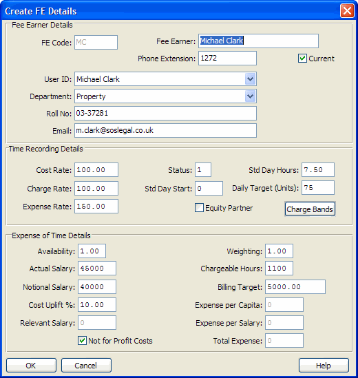

| Field Name | Data Type | Description |
| Fee earner code | ||
| Fee earner name | ||
| Phone Extension | ||
| Status | ||
| Weighting | ||
| Availability | ||
| Cost Rate | ||
| Charge Rate | ||
| Expense Rate | ||
| Standard Day Start | ||
| Standard Day hours | ||
| Actual Salary | ||
| Notional Salary | ||
| Cost Uplift Percentage | ||
| Relevant Salary | ||
| Expense per Capita | ||
| Expense per Salary | ||
| Total Expense | ||
| Chargeable Hours | ||
| Billing Target | ||
| Current yes/no | ||
| Department code | ||
| Daily Target (Units) | ||
| Equity partner option (set to "EQPR" if enabled) | ||
| Roll No | ||
| Reserved for future use | ||
| Email address | ||
| Derived: Last Modified Date | ||
| Derived: Last Modified Time (seconds past midnight) | ||
| Derived: Last Modified User Id | ||
| Selected user id linked to this fee earner | ||
| Not-for-profit-costs option | ||
| Analysis Status | ||
| Reserved for future use | ||
| Reserved for future use | ||
| Reserved for future use | ||
| Reserved for future use | ||
| Reserved for future use | ||
| Reserved for future use | ||
| Reserved for future use | ||
| Reserved for future use | ||
| Reserved for future use | ||
| Reserved for future use | ||
| Reserved for future use | ||
| Reserved for future use | ||
| Reserved for future use | ||
| Reserved for future use | ||
| Reserved for future use | ||
| Reserved for future use | ||
| Reserved for future use | ||
| Reserved for future use | ||
| Reserved for future use | ||
| Reserved for future use | ||
| Reserved for future use | ||
| Reserved for future use | ||
| Reserved for future use | ||
| Fee Credit FE | ||
| Reserved for future use |
| Index Name | Is Primary? | Is Unique? | Word Indexed? | Database Fields |
| ANALY-STATUS | ANALY-STATUS | |||
| AUDIT | MOD-DATE + MOD-TIME | |||
| FEE-CREDIT-FE | FEE-CREDIT-FE | |||
| FEE-EARNER | FEE-EARNER | |||
| SPARE-CHAR02 | SPARE-CHAR02 | |||
| SPARE-CHAR03 | SPARE-CHAR03 | |||
| SPARE-DATE01 | SPARE-DATE01 | |||
| SPARE-DATE02 | SPARE-DATE02 | |||
| SPARE-INT01 | SPARE-INT01 | |||
| SPARE-INT02 | SPARE-INT02 |
FEETR corresponds to the information entered in the PM Fee Earner Maintenance screen.
The DEPARTMENT field is not compulsory, so linking to the DEPARTMENT table in order to retrieve the departmental description should be made with an outer-join. In some older versions of Practice Manager the department field was not validated as there was no department table in the database. Again, a left outer join to the DEPARTMENT table will guard against this possible outcome when reporting and help to identify any stray or invalid department codes for long-term users of Practice Manager.
The EQUITY-PR field will hold the string "EQPR" or be blank, depending only on whether you tick the Equity Partner check box.
Simple Look-Up
FEETR is a common "look-up" table for the many other tables that hold a Fee Earner code field, such as CLIDB, MATDB, NOMACCS, NOMTRANS and TRTRANS. It is usually linked so as to provide the full Fee Earner name rather than just a code number or initials.
CLIDB.FEE-EARNER -> FEETR.FEE-EARNER
MATDB.FEE-EARNER -> FEETR.FEE-EARNER
TRTRANS.FEE-EARNER -> FEETR.FEE-EARNER
An outer-join is advisable in any of these cases to guard against the possibility that an old record might contain the Fee Earner code of someone who has long since left the firm and hence for whom there is no FEETR record in Practice Manager.&npsb; This could occasionally happen for firms whose old data was not electronically converted when they moved across to Practice Manager.
Aliased Look-Up
When reporting by "fee earner" you may have several options to choose from. For example at least 4 different fee earners might be behind even the simplest bill to a client namely:
Each of these is a fee earner field which could validly be linked to FEETR.FEE-EARNER. By adding FEETR to a report several times and giving it a different alias name each time it is then possible to run one report grouped by or showing a choice of the names of the different fee earners involved. For example, using alias names CLIENTFEETR MATTERFEETR and SUPERVISORFEETR.
This arrangement of 4 distinct links lets you list matters grouped by any one, two or all three possible alternative fee earners implied in each:
CLIDB.FEE-EARNER -> CLIENTFEETR.FEE-EARNER
CLIDB.CL-CODE -> MATDB.CL-CODE
MATDB.FEE-EARNER -> MATTERFEETR.FEE-EARNER
MATDB.SUPERVISOR -> SUPERVISORFEETR.FEE-EARNER